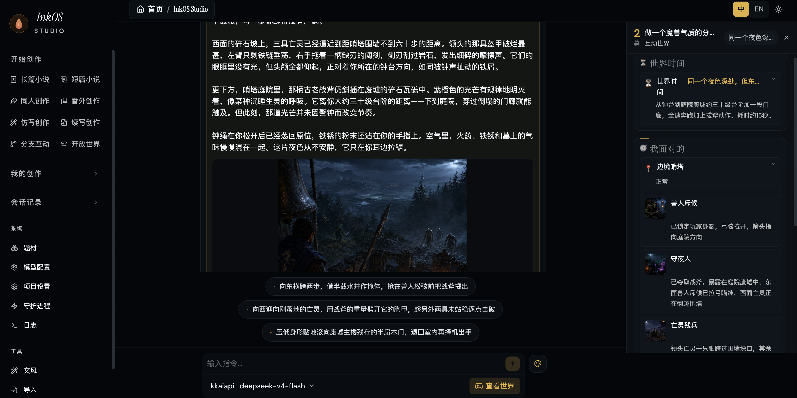

开源 AI 小说工具横向看01 / 09
不是只看 Star
对比了 8 个工具
写中长篇怎么选
自动生成、资料管理、长期写作，几个项目做的其实不是同一件事。



功能范围最广02 / 09
01 · InkOS
一套系统做很多类型
适合：除了长篇，还想做短篇、剧本、互动内容或翻译
01长短篇、剧本、互动影游和翻译都覆盖
02Studio、TUI、CLI 三种使用入口
03长篇记忆、审稿修订和多线剧情推演
我的判断功能面最广，只写一种题材时先想清楚真正会用哪些。
完整 Web 系统04 / 09
03 · MuMuAINovel
浏览器里完成主要流程
适合：习惯 Web 界面，愿意自己部署服务

01智能向导生成大纲、角色和世界观
02角色关系、章节编辑、Prompt 调整和拆书
03可通过 Docker 部署在自己的服务器
我的判断Web 产品感比较完整，不过部署组件比单机工具多一些。
自动化路线05 / 09
04 · ainovel-cli
让系统持续往下出章
适合：命令行用户，希望把长篇生产流程自动跑起来
● ● ●
Architect → Writer → Editor
滚动规划下一卷与剧情弧写章 → 一致性检查 → 七维评审 → 必要时重写
01三个 Agent 分工完成规划、写作和编辑
02卷与剧情弧滚动规划，按长篇组织上下文
03七维评审，支持逐章验收与中断恢复
我的判断自动化路线最明确，但它不是传统的可视化码字软件。
写作与 Agent 兼顾06 / 09
05 · OpenFic
工作流可以自己调整
适合：既想要写作界面，也想定制 Agent 与 Prompt
01跨平台使用，项目数据保存在本地
02Prompt、Agent 与工作流都可以定制
03通过语义检索寻找长篇历史信息
我的判断写作软件和 Agent 系统之间比较均衡，不走一键成书路线。
提示词与流程07 / 09
06 · Casting-Workflow
把短篇拆成 12 个阶段
适合：喜欢研究提示词和创作步骤，主要写短篇
脑洞灵感风暴人设大纲
细纲概要开篇正文
优化润色续写扩写
01用本地提示词与文件组织写作流程
02先提炼风格指纹，再进入多阶段写作
03结尾加入质量与独特性检查
我的判断更像可拆解的创作流水线，不是完整的日常码字软件。
桌面工作台08 / 09
07 · CharacterArc
功能集中在一个应用里
适合：喜欢桌面 GUI，不想一直面对命令行

01项目资料、人物组织、关系图与剧情大纲
02三栏章节编辑器、历史版本与 AI 侧栏
03Skill、拆书、审计与封面工作台
我的判断桌面工作台功能很齐，适合偏爱传统软件体验的人。
资料管理路线09 / 09
08 · Scriverse
把小说当成资料工程
适合：世界设定多，愿意认真整理角色与时间线
01正文、分卷、角色、组织、世界设定和时间线
02关系图、大纲伏笔、全文检索和历史版本
03章节、关系、时间线与一致性分析任务
我的判断资料管理做得很细，适合设定密集型长篇。
作者主导的长期写作03 / 09
02 · OpenWrite 中长篇选择
AI 多干活，方向还在自己手里
适合：自己决定故事方向，让 AI 负责上下文、初稿、审稿和修订

01作者意图与近期目标优先；人物、世界和大纲只有一份确认版真源
02位置、伤势、认知和关系按章节结算；写章带上最近正文与相关旧章
0337 维审稿定位证据；AI 改稿先给 diff，冲突或失败会拦截、恢复
真正优势AI 可以深度参与，但故事事实和最终修改权始终留在作者手里。